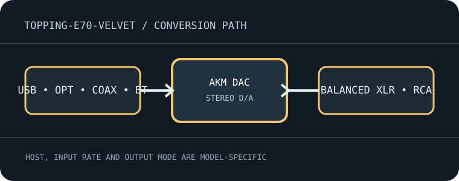

[ INDIVIDUAL MODEL // SOUND HARDWARE ]
TOPPING E70 Velvet
Desktop DAC/preamp with USB, optical, coaxial and Bluetooth inputs plus balanced XLR and RCA line outputs.

Model-specific specifications
| Exact model / architecture | AKM-based stereo digital-to-analog converter with selectable digital filters and preamp/output modes; no analog recording inputs or headphone jack. |
|---|---|
| Digital inputs / interface | USB-B, optical TOSLINK, coaxial S/PDIF and Bluetooth. USB is the high-rate computer path; optical/coaxial use S/PDIF framing. |
| Analog / digital outputs | Balanced stereo XLR and unbalanced stereo RCA line outputs; no headphone output. |
| Supported formats and rates | USB supports PCM through 32-bit/768 kHz and DSD512. Optical/coaxial accept PCM through 24-bit/192 kHz and DoP DSD64 where supported. Bluetooth maximum depends on negotiated codec (including LDAC); do not infer USB-rate support over wireless. |
| Power | External DC adapter; use the supplied adapter and verify its rated voltage/polarity on the chassis/manual. |
| Drivers / host compatibility | USB computer playback on supported Windows/macOS/Linux hosts; install TOPPING USB driver on Windows for high-rate/ASIO modes. Check player output/DSD mode and system device selection. |
| Compatibility caveats | Select fixed line mode when feeding an amplifier without volume control, or use preamp mode deliberately. Digital input limits differ; avoid hot-plugging analog outputs at high level. |
Compatibility & preservation
Select fixed line mode when feeding an amplifier without volume control, or use preamp mode deliberately. Digital input limits differ; avoid hot-plugging analog outputs at high level.
- Record the exact product name, hardware revision, serial range, included power supply, firmware and driver version before service.
- Match digital sample format/rate to the selected physical input and host mode; set downstream amplifier level safely before playback.
- Keep the model-specific manufacturer manual with the device; connector shape alone does not guarantee electrical or protocol compatibility.
Manufacturer sources
- E70 Velvet manufacturer product pageManufacturer product documentation for the exact model and its revision-specific operation/specifications.
- Official E70 Velvet user manualManufacturer product documentation for the exact model and its revision-specific operation/specifications.